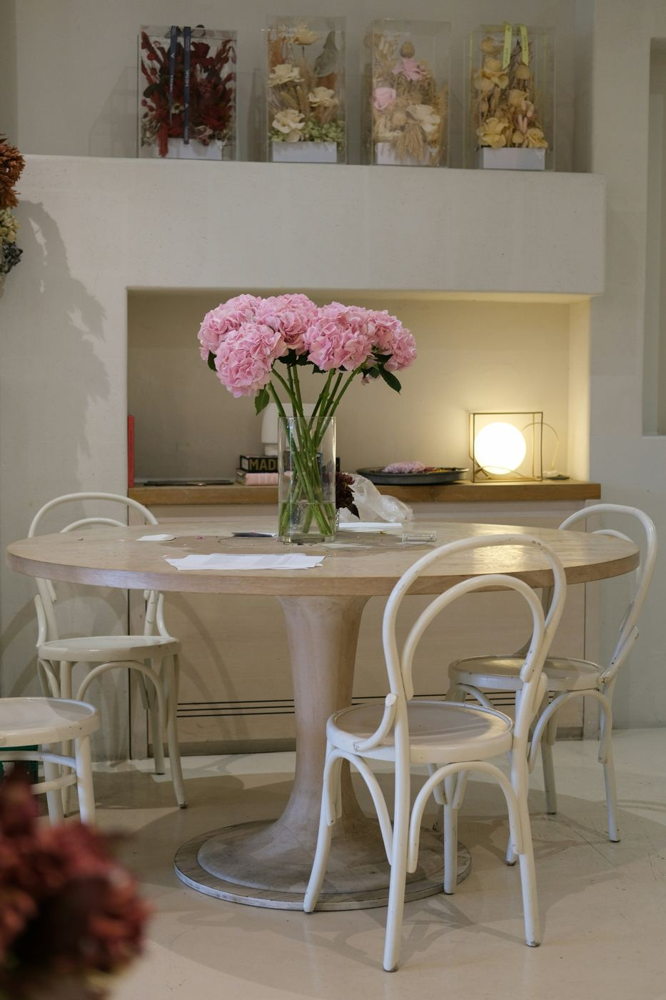
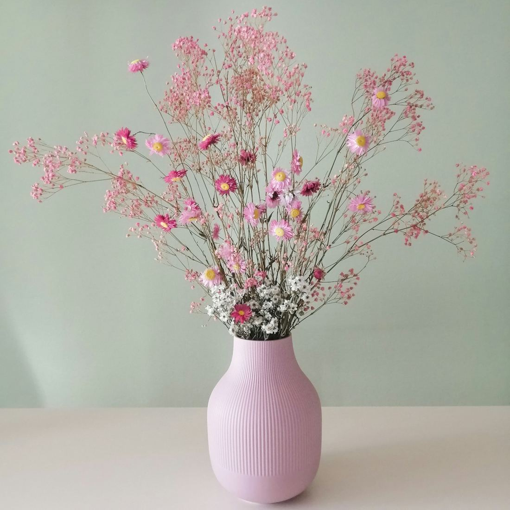

Every day, a littlecloser to yourdream job
Your own corner to prepare for interpreting interviews, grow your English, and see every step you take, saved for both of us.

you've got
this, Safa

English Plan12 weeks, day by day Kalam interviewTuesday prep
Practice the real testMock testTimed, with a recording
ConfidenceSpeak without freezing
Kalam interviewTuesday prep
Practice the real testMock testTimed, with a recording
ConfidenceSpeak without freezing
 MultilingualTests and study material
MultilingualTests and study material
 AnswersPredicted questions
Other jobs to apply forJobsSaved for later
AnswersPredicted questions
Other jobs to apply forJobsSaved for later
interpretation
test
You already passed the hard part. Now we polish the rest.
Your medical interpretation test is behind you. Next comes the Kalam interview on Tuesday, then twelve gentle weeks of spoken English before the retake in January.
You already passed the hardest part. The rest is practice, one small step at a time, and you are so ready for it.
Let's make today count, one beautiful step at a time.
- Kalam interview · Tuesday, Oct 20
- English retake · mid-January 2027
- About 40 minutes of English, every day
small steps,
big dreams
Ready for Kalamon Tuesday
Saved on this deviceTwo days to get ready. Today: learn your answers. Tomorrow: practice them like the real interview. Do every Must first. Short on time? Do the 5 things below. English Plan starts Wednesday, after the interview, at Day 1.
Tuesday, Oct 20phone, then Zoom
Two parts: a short phone screening, then a Zoom meeting. The questions below include the ones you were told about plus the ones they are likely to add. Answers use simple, clear English on purpose: easy to remember, easy to say with confidence.
Listen anywhere, even with the screen off
The voice uses example numbers for the laptop and internet speed. Say your real ones. Every question below also has Hear question and Hear answer buttons.
About Kalam (say this if asked)
Kalam CX is part of Future Group, a language company that started in Egypt in 1994. Kalam itself was founded in 2019 and is based in Dubai, with sites in Egypt and other countries. It offers OPI (phone), VRI (video) and sign-language interpreting in 200+ languages, mainly for healthcare and legal clients, plus customer-service work.
Safe to say: "phone and video interpreting in many languages, especially healthcare." Don't quote numbers or certifications you aren't sure of.
Words to use in your answers
- OPI / VRI: phone / video remote interpreting
- consecutive interpreting: listen, then interpret
- accuracy, completeness: everything, nothing added
- confidentiality: patient information stays private (HIPAA)
- impartiality: neutral, no opinions
- code of conduct, medical terminology
What happens after the interview (Kalam's own steps)
From the job offer text on Kalam's own job pages, plus what candidates report.
- English test: EF SET, C1 neededA free online test of reading and listening (no speaking). Kalam's offers ask for C1 in both. Reading and listening are your strong side, so practise it this weekend at efset.org.
- Documents within 48 hoursID (front and back), a selfie holding your ID, your diploma, an English CV, a speed-test screenshot, and photos of your Ethernet cable, workstation, headset and router. Send them only to an official Kalam email.
- 4 agreements to e-signCode of Conduct, Code of Ethics, Training Agreement, Equipment Agreement. Read the training and deduction terms before signing.
- 13 days of live training9 a.m.–6 p.m. US Eastern time (about 4 p.m.–1 a.m. in Egypt). Missing a class can mean dismissal.
- ALTA interpretation testAbout 20 short doctor–patient dialogues by phone. Your result decides full-time or freelance. You already passed a similar test, so you can do this.
- Contract and first loginCandidates report the contract comes after your first day of real work.
Phone screening tips
- Quiet room, phone charged, earphones with a mic.
- Smile while you talk; people can hear it.
- Speak slowly. Short sentences are better than long broken ones.
- Didn't understand? "Sorry, could you repeat that, please?"
- Need a second? "That's a good question. Let me think…"
Zoom tips
- Test Zoom the day before at zoom.us/test. Rename yourself "Safa Mohamed".
- Laptop with internet cable, headset, camera at eye level, light in front of you.
- Plain background, simple professional top.
- Look at the camera when you speak, not at your own picture.
- If they give you a short interpretation test: notes for numbers, first person, everything.
12 weeks to a confidentEnglish test
Your problem is clear and very common: you understand English well, but speaking alone for one minute, with no preparation, is hard. That is a skill, and skills grow with daily practice, not with more studying. The English test you'll retake has about 22 general questions (your day, your opinion on AI, and so on), answered on camera.
Your day
Starts Wednesday, Oct 21. From then on, today opens by itself. Every day: 3 new words, 3 expressions and 3 or 4 short tasks (about 40 minutes). Missed a day? No problem. Just do today's day.
The 4-step answer: works for any question
- AnswerSay your answer directly. "In my opinion, AI is very useful."
- ReasonSay why. "…because it saves time and helps people learn."
- ExampleGive one real example. "For example, I use it to practice my English."
- CloseFinish clearly. "So overall, I think AI is a great tool if we use it wisely."
These four parts take about one minute. Never stop in the middle; finish with the Close line.
Ready-made phrases (learn these by heart)
How each day works
| Minutes | What | How |
|---|---|---|
| 10 | Words and expressions | Press Hear, say each one 3 times, then make one sentence of your own. |
| 15 | One main activity | Watch a video, copy a speaker, write, talk to Claude or take a mini test. The day tells you which. |
| 10 | Speak for 1 minute | Answer one question out loud and record it on your phone. Answer, reason, example, close. |
Day 7 is a short review and rest. Weeks 4, 8 and 11 have one big practice test with all 22 questions.
Every free resource
Prompts for your Claude account
Copy, paste into a new chat in your Claude app. Voice mode works best for prompt 1.
Keep a mistake log
Every time you hear a mistake in your recording, write it in a notebook: what I said → correct version. Every Sunday, read the whole log out loud. Most people repeat the same 5–10 mistakes. Fix those and your English sounds much better.
Speaking withcalm confidence
You understand English well. What stops you is the moment of freezing when you must talk alone. That freeze is not a language problem; it's a stress reaction, and it can be trained away like a muscle.
Why you freeze
- Stress blocks memory. When you're nervous, your brain protects you and the words you know “disappear”.
- Translating word by word. You build the sentence in Arabic first, then translate it. That's slow, so you stop.
- Fear of mistakes. You check every word for grammar before you say it, so nothing comes out.
The truth about the test
- Examiners score clear communication and fluency more than perfect grammar.
- Small mistakes are normal. Native speakers make them and say “um” too.
- A simple, complete answer beats a perfect half answer.
- You already passed the harder test, the interpretation one.
Before you speak (2 minutes)
- Box breathingBreathe in for 4, hold for 4, out for 4, hold for 4. Do it 3 times. It calms your body in one minute.
- Power poseStand tall, shoulders back, hands on hips, for 2 minutes before practice or a test (from Amy Cuddy's talk below).
- SmileSmiling relaxes your voice. People can hear a smile even on the phone.
- Know your first sentenceHave a ready opening: “That's a great question. Well, to be honest…” The first sentence starts the engine.
While you speak
Do
- Slow down. Calm and slow sounds confident.
- Use short, simple sentences.
- Pause silently instead of saying “umm”.
- Follow the 4 steps: answer, reason, example, close.
- Look at the camera, like it's a friendly person.
- Keep your hands relaxed and visible.
Rescue phrases
- Mind goes blank: “Let me think about that for a second.”
- Forgot a word: “It's a kind of…” / “It's something you use to…”
- Made a mistake: “Sorry, I mean…” then continue.
- Lost the point: “What I'm trying to say is…”
- Need to finish: “So overall, that's why I think…”
- Live interview, didn't understand: “Sorry, could you repeat that, please?”
Build it step by step
Confidence grows when you go one small step past your comfort zone, again and again. Move up a step when the current one feels easy.
- Talk to yourselfDescribe what you're doing, out loud, in English, at home.
- Voice notesRecord yourself and listen. Nobody else hears it.
- Claude voice modeA patient partner who never judges you.
- CameraRecord answers on video, like the real test.
- A real personA friend, Nour, or a partner on Tandem / HelloTalk.
- Mock interviewA tutor or Claude playing a strict interviewer.
Change what you tell yourself
| Instead of | Say |
|---|---|
| “My English is bad.” | “My English is clear enough, and it's getting better every day.” |
| “I'll make a mistake.” | “Mistakes are fine. I'll fix it and keep going.” |
| “They will judge me.” | “They want me to do well.” |
| “I failed the test.” | “I passed the hard part. Now I'm training the rest.” |
Your story bank
Prepare 5 short true stories. One story can answer many questions, so you never start from zero:
- A moment you were proud of
- A challenge you overcame
- A time you helped someone
- A mistake you learned from
- A trip or celebration you remember
Watch these
30-day confidence challenge
Interpreters & Translators,all in one place
Everything about this job offer in one place: where you stand, the offer itself, how their two tests work, the predicted questions with answers, and staying safe.
Where you stand
When you're ready to retake
Email Nada Ahmed, Talent Acquisition Supervisor, at nada.ahmed@multilingualint.com:
"Dear Nada, I hope you are well. Three months ago I passed your Arabic medical interpretation assessment, and since then I have been working daily on my spoken English. I would like to retake the English assessment. Thank you, Safa Mohamed Ahmed."
Before you send it, do two full mock English tests in the Mock Test tab.
The offer (from Nada's email)
| Role | Full-time Arabic–English interpreter, phone (OPI) and video (VRI), medical |
| Schedule | Fixed, 9 a.m.–6 p.m. US Eastern time, Monday to Friday (about 4 p.m.–1 a.m. in Egypt) |
| Pay | $7 per logged-in hour, paid on the 25th of each month by PayPal, Payoneer or Wise |
| Training | 2 weeks of client training + 1 week of nesting (real calls with a trainer listening), 9–5 US Eastern. $350 paid after passing training. |
| Certificate | ALTA English certification, provided by the company |
| Steps | IT check by AnyDesk → English assessment + medical interpretation assessment → orientation |
| Company | Multilingual Interpreters and Translators LLC, Florida, USA, "A Lingtopia Group Company", founded 2017, interpreters working from Egypt |
For comparison, Kalam interpreters report about $4 per hour, so this offer is worth coming back to.
What the two tests look like
No candidate has posted about these tests online. So we looked at the company's public test website itself (assessment.multilingualint.com, without opening your personal links). Its code shows exactly how the screens work. Marked Confirmed = seen in the website's code. Likely = our best expectation.
Step by step: what you will see (Confirmed)
- Welcome screen"Video Interview", the test name, "Welcome and good luck." Press Watch Intro and listen to the whole intro video; the instructions are in it. Then Start Interview appears.
- Audio & Video testYou see yourself on camera, your camera and microphone names, and a sound bar. Click Allow when the browser asks for camera and microphone. Speak and check the bar moves. Press Start.
- Possible room scan ("360 video")If you see Start 360 video: slowly turn the laptop to show the whole room (quiet, private, nobody else), then Stop 360 video and Start questions round. No re-record for this step.
- Question video playsHeader: "Question X of N". The video plays by itself with sound and you cannot pause or rewind it. The question is only in the video, not written on screen. Take notes while it plays.
- "Recording starts in 3… 2… 1"Right after the video ends, a 3-second countdown, then a red REC badge. Start speaking as soon as you see REC. There's no extra thinking time.
- Answer, then Next QuestionEach answer can be up to 3 minutes. At 3:00 it stops and submits automatically and moves on. There is no clock on screen, so keep answers well under 3 minutes.
- Repeat (N left)While recording you also see Repeat (N left). It deletes that answer, plays the question video again from the start, and records again. The number of repeats is set by the company (the website's default is 3 for the whole test).
- Finish"Congrats! You've completed the test successfully. We will get in touch with you soon." Then email Nada that it's done.
Rules of the tool (Confirmed)
| Question | Answer |
|---|---|
| Interview, AI interview, or quiz? | A recorded one-way video interview. Pre-recorded question videos, you answer on camera. Not live, not multiple choice. |
| Camera on? | Yes, video and audio are recorded for every answer. They will see you. |
| Time per answer | Up to 3 minutes, then automatic submit. |
| Thinking time | Only the 3-second countdown. |
| Can I replay the question? | Only by pressing Repeat, which uses one of your limited repeats and deletes that answer. |
| Total time limit | None inside the test. The 24 hours in the email is the deadline to finish. |
| Is AI scoring me? | The website only records and uploads. No AI scoring is built into it. A person (the recruiter or a QA reviewer) most likely watches the videos. Likely. |
| Tab switching / notes | Nothing watches tab switching. Paper notes are fine and expected. |
| What if the page reloads? | Progress is saved in that browser. Reopen the same link in the same browser to continue. A different browser or device may start over, so don't switch. |
| Can I take it twice? | No. Once finished, the link only shows the "completed" page. |
Test 1: English assessment
Format (Confirmed): recorded video answers to spoken questions.
Content (Likely): about 4–8 questions from a recorded interviewer:
- Introduce yourself.
- Your interpreting / work experience.
- Why do you want to be an interpreter? Why medical?
- Your availability and home setup (internet, headset, quiet room).
- A scenario: a difficult caller, a word you don't understand, staying calm.
How to answer: 60–90 seconds each. Look at the camera, not the screen. Smile at the start. Answer in three parts: direct answer, one real example, one closing line. Use the predicted answers further down this tab.
Total time (Likely): 15–30 minutes.
Test 2: Medical interpretation
Format (Confirmed): same tool. Each question video is something you must interpret, and you record your interpretation.
Content (Likely): short segments of a doctor–patient conversation. Arabic patient lines → you say them in English; possibly English doctor lines → you say them in Arabic. Possibly a list of medical terms or a short passage. Expect Egyptian or Levantine dialect.
How to answer:
- Notes during the video: numbers, doses, times, negatives.
- When REC appears, interpret immediately, first person ("My chest hurts", never "she says").
- Interpret everything: no summary, no explaining.
- Small slip? Fix it out loud: "Interpreter correction: …" and continue.
- If the video asks you to introduce yourself as the interpreter first, use your script from the Scripts tab.
Setup checklist (do this before clicking either link)
- Laptop or desktop with Chrome, not a phone. One sitting, same browser for the whole test.
- Wired USB headset with the microphone near your mouth. Test it first with a voice memo.
- Ethernet cable if possible. Close other tabs and downloads.
- Charger plugged in.
- Quiet, closed room. Tell family not to come in. Phone on silent.
- Light in front of your face (window or lamp), not behind you.
- Plain grey or light wall behind you, white top: the company's own video dress code. It shows you already look like their interpreters.
- Camera at eye level. Paper, pen, and water on the desk.
English assessment: predicted questions and answers
Interpretation assessment: predicted parts and model interpretations
Grammar mistakes Arabic speakers often make
| Wrong | Right |
|---|---|
| I study law since 2021. | I have studied / have been studying law since 2021. |
| He take the medicine every day. | He takes the medicine every day. |
| Doctor said patient has fever. | The doctor said the patient has a fever. |
| Can you explain me? | Can you explain it to me? |
| We discussed about the problem. | We discussed the problem. |
| I am agree. | I agree. |
| She is married with an engineer. | She is married to an engineer. |
| It depends of the situation. | It depends on the situation. |
| I have 25 years. | I am 25 years old. |
| The informations / advices | The information / advice (no "s") |
Pronunciation: p ≠ b (pill / bill, pain / bain), v ≠ f (vein / fine). These matter in medical words.
Staying safe: the AnyDesk check
The company is real: Multilingual Interpreters and Translators LLC, Winter Haven, Florida, with staff in Egypt, founded 2017. Its domain has existed since 2020, and the test site is really theirs. No scam reports were found. Nada's signature (Talent Acquisition Supervisor, nada.ahmed@multilingualint.com, Orlando address, "A Lingtopia Group Company") matches the company's own website, which is a good sign. Tap her name in Gmail once to confirm the real sender address ends in @multilingualint.com. But "an IT person on WhatsApp asks for AnyDesk" is also the exact method fake-job scammers use, sometimes by copying a real company's name. Protect yourself either way.
Before
- When the IT person messages on WhatsApp, reply to Nada's email (it's on the company domain) and ask: "Is +__ your IT specialist?" Wait for her yes before connecting.
- Download AnyDesk yourself from anydesk.com only. Never from a link they send.
- Log out of banking, PayPal, Payoneer, Wise, and email in the browser. Close everything else.
During
- Stay in front of the screen and watch every click.
- They should only check: Task Manager / system info (CPU, RAM), speed test, camera, headset, ethernet.
- If they open anything else, close AnyDesk immediately.
After
- Close or uninstall AnyDesk. Make sure "unattended access" is off and no password is saved in it.
- If anything felt wrong: unplug the internet and change your passwords from your phone.
Tech requirements (from the email)
| Camera | 1080p (Full HD) |
| Headset | USB only (not Bluetooth, not 3.5 mm jack) |
| Internet | Download 20 Mbps, upload 15 Mbps, latency ≤ 100 ms, ethernet cable required |
| Computer | Windows 10+ or Mac, Intel i5 8th gen or Ryzen 5, 12 GB RAM minimum |
| Video setup | Silent, well-lit room, grey background, white clothing |
Check before the IT call: run a speed test at speedtest.net over the cable; on Windows press Ctrl+Shift+Esc → Performance to see CPU and RAM.
Multilingual mock tests
The same screens as their real test website. Pressing a card opens it in the Mock Test tab.
The 12 rules that pass the test
These come from the US national standards (NCIHC Code of Ethics and Standards of Practice), which every American healthcare interpreting company follows. Raters listen for them.
- Interpret everything.No adding, no leaving out, no summarizing. Repeat it even if it's rude, repeated, or seems unimportant.
- Always first person.Doctor: "Do you have a fever?" You: "هل عندك حرارة؟" Never "He's asking if…". Patient: "My chest hurts", never "She says her chest hurts".
- Keep the tone and level.Formal stays formal, angry stays angry, medical words stay medical. Don't simplify the doctor's words yourself. If the patient doesn't understand, they ask the doctor.
- When you speak for yourself, say "the interpreter"."The interpreter needs a repetition." Then tell the other side what you just asked. This is called transparency.
- Never give advice or your opinion.If the patient asks you "What should I do?", you interpret the question to the doctor. You don't answer it.
- Never lose numbers, negatives, or time.Doses, dates, "not", "only", "for three days". Write numbers down the moment you hear them.
- Don't convert or explain.Don't turn ounces into cups or Celsius into Fahrenheit. Converting is adding.
- Correct yourself right away."Interpreter correction: the doctor said fifty milligrams, not fifteen."
- Manage the flow politely.If someone talks too long: "Excuse me, the interpreter needs to interpret now." Then continue.
- Confidentiality (HIPAA).Nothing from a call leaves the call. Destroy notes after every call. Never record.
- Stay neutral.No side-chats with the patient. If you know the patient personally, tell the company and step out.
- Safety first.Anything about suicide, abuse, chest pain, or allergy is interpreted immediately and completely, even if the patient says "don't tell the doctor".
The NCIHC Code of Ethics, 9 principles (memorize the names)
| # | Principle | In one line |
|---|---|---|
| 1 | Confidentiality | Everything stays inside the care team. |
| 2 | Accuracy | Full message and its spirit, nothing added or omitted. |
| 3 | Impartiality | No opinions, no bias, no advice. |
| 4 | Respect | Treat every party with dignity. |
| 5 | Cultural awareness | Know both cultures, including US hospital culture. |
| 6 | Role boundaries | Interpret only. No personal involvement. |
| 7 | Professionalism | On time, prepared, honest about limits. |
| 8 | Professional development | Keep learning terms and skills. |
| 9 | Advocacy | Rare. Only when the patient's safety or dignity is at serious risk and other steps failed. |
Least-intrusive rule: first just interpret. If needed, clarify a word. If needed, flag a possible cultural misunderstanding. Advocacy is last.
Tricky situations and what to do
| Situation | What you do |
|---|---|
| Bad audio, can't hear | "The interpreter cannot hear clearly. Could you please repeat?" Never guess. Tell the other party what you asked. |
| Speaker talks for a long time | Politely interrupt: "Excuse me, the interpreter needs to interpret now." Interpret, then ask them to pause after short phrases. |
| Unknown medical word | "The interpreter requests clarification of the term ___." Tell the patient you asked. Drug names stay in English. |
| Patient asks your opinion | Interpret the question to the doctor. If it's directed at you: "The patient asked the interpreter for an opinion. As the interpreter I can't give advice," then interpret it to the doctor. |
| "Don't tell the doctor…" | Remind them everything is interpreted, then interpret it, including the "don't tell" part. |
| Family members talk to each other | Interpret it. Side conversations are part of the session. |
| Patient mentions suicide or self-harm | Interpret immediately, word for word. Never soften. The clinician decides what happens next. |
| Dialect you don't understand | Be honest: "The interpreter is having difficulty with the patient's dialect." Ask for repetition or a different interpreter. Never pretend. |
| "I think it's the evil eye" / jinn / fasting | Interpret it literally ("evil eye"). Only if a misunderstanding is likely: "The interpreter notes there may be a cultural reference; the provider may wish to ask about it." |
| Provider leaves, patient keeps talking to you | Don't discuss medical things. "I'll interpret that for the doctor when they return." |
| You made a mistake earlier | "Interpreter correction: …" as soon as you notice. |
Say these from memory
Every company has its own opening line and will teach it in training. On the test, a clean, confident version of this standard script shows professionalism. Read each one aloud 5 times.
Ten practice calls
These are realistic doctor–patient calls written for this test. The patient speaks different Arabic dialects (Egyptian, Levantine, Palestinian, Iraqi, Gulf, Yemeni, Sudanese) because US patients come from everywhere. Calls 7–9 are insurance, pharmacy, and scheduling: the most common phone calls.
Numbers, doses, dates
Numbers are where most candidates fail. Read each sentence once (or have someone read it), write only the numbers and units on paper, then interpret out loud. Reveal to check.
Note-taking symbols
| ↑ / ↓ | more, high, increase / less, low |
| → | causes, leads to, refer to |
| Ø | no, not, none |
| 2x/d | twice a day (BID) |
| 3x/d | three times a day (TID) |
| q6h | every 6 hours |
| PRN | as needed |
| PO / HS | by mouth / at bedtime |
| Hx Sx Dx Tx Rx | history, symptoms, diagnosis, treatment, medication |
| d wk mo y | day, week, month, year |
The traps
- 15 vs 50, 13 vs 30, 14 vs 40. On the phone they sound alike. If not 100% sure, ask: "The interpreter requests a repetition of the number."
- Always write the unit with the number: 500 mg, 10 units, 2 puffs.
- Frequency + duration: "twice a day for 10 days." Don't drop the second half.
- Don't convert Celsius↔Fahrenheit, kg↔lb, ounces↔cups.
- Read blood pressure as "148 over 95" / ١٤٨ على ٩٥.
- Money: "$4.15" = four dollars and fifteen cents / أربعة دولارات وخمسة عشر سنتًا.
Medical vocabulary
547 high-frequency terms in 15 groups. Start with Insurance & admin and Medicines: most phone calls are about appointments, refills, and insurance. Notes show dialect words patients actually say (E = Egyptian, L = Levantine, I = Iraqi, G = Gulf, M = Moroccan).
What would you do?
Scenario questions like the ones raters and trainers ask. Do it until you get all of them right without thinking.
Words, dialects, numbers
Terminology, dialect traps, numbers, and doctor instructions. These are the small things that cost points on the recorded test.
Free resources
Use these after the test too: training and the ALTA exam come next.
Glossaries (English–Arabic)
Ethics and standards
Practice videos (interpret aloud)
- Chest pain doctor–patient dialogue
- UCL doctor-visit playlist
- Medical interpreting practice playlist (use the English turns)
- Audio for note-taking practice
Method: pause after 1–2 sentences, interpret into Arabic aloud, record, compare.
About the ALTA test (coming later)
Phone or online, about 20 dialogues in 30 minutes, segments up to 35–50 words, paper notes allowed, up to 2 repeats. Scored 1–12; medical jobs often want 10. ALTA practice test page
Other jobs you canapply for
Remote jobs paying in US dollars that accept people living in Egypt: interpreting jobs like Multilingual and Kalam, AI companies that need Arabic speakers, and ways to build experience. Tick “I applied” to keep track.
How to apply well
- Use your interpreting CVPut “Arabic–English Interpreter” at the top, then your languages, law degree and interpreting training.
- Apply on the company's own pageNot on copies on other job sites.
- Send a short emailUse the template below. Change the company name each time.
- Track it hereTick “I applied”. Follow up once after 7–10 days if there's no reply.
- Prepare for their testMost interpreting companies give a recorded test like the Multilingual one, so the Mock Test tab is your practice.
Email template
Subject: Application – Arabic–English Interpreter – Safa Mohamed Ahmed
Dear Hiring Team,
My name is Safa Mohamed Ahmed, an Arabic–English interpreter based in Alexandria, Egypt. I am a law graduate from Alexandria University (English Section) and a native Arabic speaker. I have been training on medical terminology, the interpreter code of ethics, and phone and video interpreting.
I would like to apply for your Arabic interpreter position. I can work remotely from a private, quiet room with a wired internet connection and a USB headset, and I am available for shifts in US hours.
My CV is attached. Thank you for your time and consideration.
Best regards,
Safa Mohamed Ahmed
[your email] · [your phone number]
Getting paid in Egypt
- PayPal: link an Egyptian Visa card to receive and withdraw money.
- Payoneer: used by many of these companies; withdraws to an Egyptian bank.
- Wise: used by Multilingual.
- Bank account in your name: needed for Mercor (Stripe).
Scam warning signs
- Any fee: registration, training, “starter kit”, certificate.
- A “recruiter” who moves you to Telegram or WhatsApp only.
- Hired in minutes with no test or interview.
- Asking for your ID, card or bank login in chat.
- Emails not from the company's own website domain.
Skip these (US residents only)
LanguageLine · CyraCom · Certified Languages International · Interpreters Unlimited · Ad Astra · Dialog One · Dals (EU only) · DataAnnotation · AMN / Stratus · Handshake AI
Mock test:the real flow
This copies the screens of the real test website step by step: Watch Intro, the camera check, question videos that can't be paused, the 3-2-1 countdown, REC, up to 3 minutes per answer, and "Repeat (N left)". The questions are our best prediction, read aloud by your phone's voice.
The real test shows no text and no timer. Turn these on only for your first practice run.
Predicted questions,and what to say
Nobody can see the real questions in advance. These are our predictions, based on how this company's test works and what interpreting companies usually ask. Learn the structure of each answer, not word for word, and say it in your own natural English. Anything in [brackets] you must replace with your own true details.
Everything she did, as it happened
Each ticked step, learned word and finished workout is saved here with the time, from both apps.
Loading…